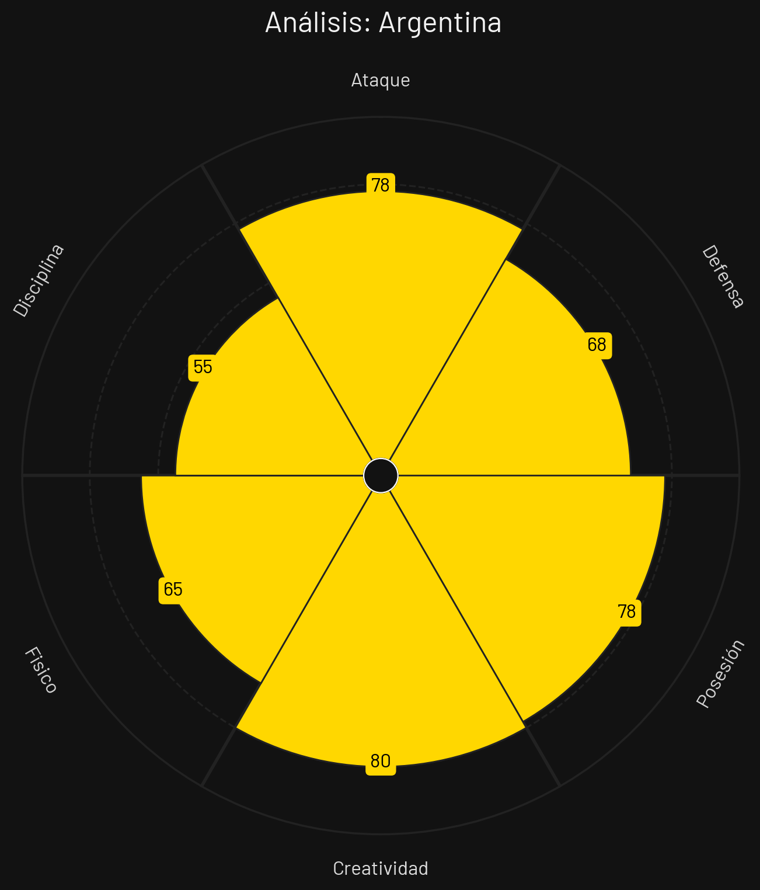
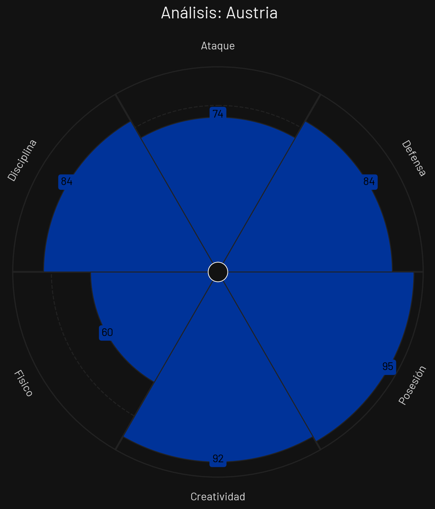
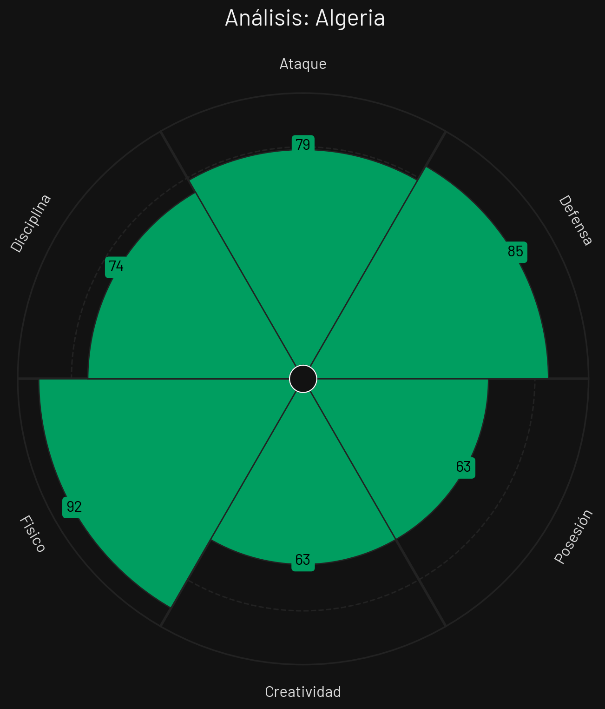
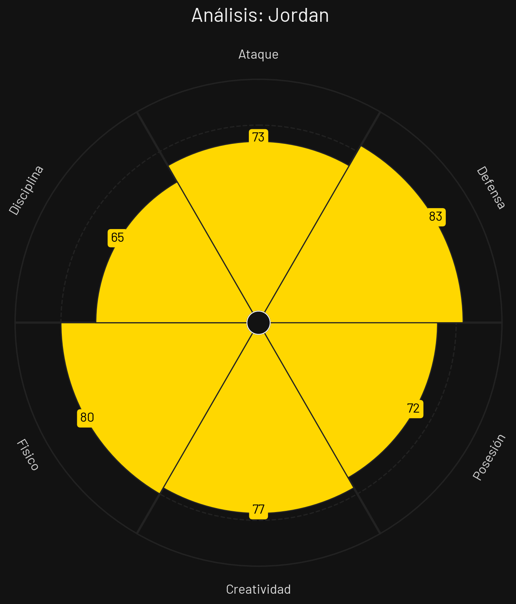

🏆 Tabla de Posiciones
| Pos | Equipo | PJ | G | E | P | GF | GC | DG | Pts |
|---|---|---|---|---|---|---|---|---|---|
| 1 |
 Argentina
Argentina
|
1 | 1 | 0 | 0 | 3 | 0 | 3 | 3 |
| 2 |
 Austria
Austria
|
1 | 1 | 0 | 0 | 3 | 1 | 2 | 3 |
| 3 |
 Jordania
Jordania
|
1 | 0 | 0 | 1 | 1 | 3 | -2 | 0 |
| 4 |
 Argelia
Argelia
|
1 | 0 | 0 | 1 | 0 | 3 | -3 | 0 |
Argentina

Estilo de Juego e Influencia
Posesión asociativa hiper-técnica con rotación en carril central, pases filtrados milimétricos y presión tras pérdida coordinada.
- Formación Base: 4-3-3 / 4-4-2 (Rombo)
- xG Promedio: 2.30 por 90 min
- Zona de Presión: Bloque Alto (PPDA 7.5)
- Jugador Clave: Lionel Messi
Austria

Estilo de Juego e Influencia
Presión agresiva inmediata (Gegenpressing) en salida rival, intensidad extrema y transiciones ultra-directas.
- Formación Base: 4-2-2-2 / 4-2-3-1
- xG Promedio: 1.72 por 90 min
- Zona de Presión: Bloque Alto (PPDA 6.5 - El más agresivo)
- Jugador Clave: Marcel Sabitzer
Argelia

Estilo de Juego e Influencia
Ataque posicional basado en desequilibrio de sus extremos en banda y cambios de juego rápidos cruzados.
- Formación Base: 4-3-3
- xG Promedio: 1.38 por 90 min
- Zona de Presión: Bloque Medio (PPDA 9.8)
- Jugador Clave: Riyad Mahrez
Jordania

Estilo de Juego e Influencia
Repliegue profundo en campo propio tapando pasillos interiores, juego defensivo rústico y contras rápidas.
- Formación Base: 5-4-1
- xG Promedio: 0.90 por 90 min
- Zona de Presión: Bloque Bajo (PPDA 12.8)
- Jugador Clave: Mousa Al-Tamari
Análisis Técnico: Grupo J - Mundial 2026
Basándome en los perfiles tácticos proporcionados, presento un análisis técnico detallado de los equipos del Grupo J:
📊 Comparativa General de Atributos
| Atributo | ||||
|---|---|---|---|---|
| Ataque | 78 | 74 | 79 | 73 |
| Defensa | 68 | 84 | 85 | 83 |
| Posesión | 78 | 95 | 63 | 72 |
| Creatividad | 80 | 92 | 63 | 77 |
| Físico | 65 | 60 | 92 | 80 |
| Disciplina | 55 | 84 | 74 | 65 |
🔍 Análisis por Equipo
ARGENTINA
Fortalezas
- Genio de Messi (89): Visión de juego y pases filtrados incomparables.
- Posesión Asociativa (87): Gran fluidez y triangulaciones rápidas.
- Presión tras Pérdida (82): PPDA coordinado de recuperación.
Debilidades
- Vulnerabilidad a Transición Aérea (74): Dificultades ocasionales ante centros llovidos rápidos.
Estrategia: Rotaciones interiores en corto, atraer defensores hacia Messi y habilitar rupturas rápidas por fuera.
AUSTRIA
Fortalezas
- Gegenpressing de Élite (88): El equipo con la presión alta más intensa.
- Transición Directa (80): Ataques verticales en menos de 3 toques.
- Despliegue de Sabitzer (82): Gran manejo del recorrido defensivo.
Debilidades
- Exposición de Línea (70): Línea de defensa adelantada expuesta a balones largos.
Estrategia: Gegenpressing inmediato, forzar pérdidas en salida enemiga y enfilar directo hacia el arco en vertical.
ARGELIA
Fortalezas
- Calidad de Mahrez (83): Habilidad individual en banda derecha.
- Cambios de Juego (78): Pases largos precisos cruzados.
- Pegada Ofensiva (76): Gran poder de disparo en el área.
Debilidades
- Repliegue Físico (68): Sufren si el oponente les impone un ritmo de ida y vuelta constante.
Estrategia: Aislar a los extremos en banda, generar el uno contra uno, y realizar cambios rápidos de banda.
JORDANIA
Fortalezas
- Rigor Defensivo (78): Línea de 5 replegada muy junta.
- Contras de Al-Tamari (75): Velocidad desequilibrante en escapadas.
- Compromiso sin Balón (74): Gran sacrificio colectivo de sus futbolistas.
Debilidades
- Salida Asociativa (60): Propensión a regalar el esférico bajo presión alta.
- Dependencia del Contraataque (58): Incapacidad para proponer fútbol ofensivo.
Estrategia: Cerrar los pasillos centrales, defender en bloque bajo en área propia y lanzar balones a Al-Tamari.
⚔️ Matchups Clave
🏆 Proyección del Grupo
Clasificación Esperada:
🧠 Análisis Táctico Avanzado
A continuación, se presenta un análisis técnico y cuantitativo del **Grupo J** para el Mundial de Fútbol 2026, evaluando las virtudes, debilidades y los enfoques estratégicos de cada selección a partir de sus perfiles estadísticos.
🔍 Análisis Perfil por Perfil
1. Jordania
Al examinar el archivo `PerfilTacticoJordania.png`, la selección jordana se descubre como un bloque bastante equilibrado y con un fuerte sustento en las fases sin balón.
- Fortaleza principal: Una retaguardia muy sólida (83 en Defensa) apuntalada por un buen tono atlético (80 en Físico). Esto configura un equipo incómodo de enfrentar, capaz de resistir embates continuos.
- Área de mejora: Su comportamiento reglamentario. Un registro de 65 en Disciplina indica que suelen recurrir con demasiada frecuencia a la falta táctica o a la fricción excesiva, lo que puede condicionar partidos por amonestaciones rápidas.
2. Argelia
De acuerdo con los datos extraídos del archivo `PerfilTacticoAlgeria.png`, el combinado africano propone un ecosistema táctico hiper-físico y de máxima seguridad defensiva.
- Fortaleza principal: Un despliegue corporal e intensidad en duelos descomunal (92 en Físico), protegiendo la mejor zona posterior del sector (85 en Defensa). Tienen una respetable contundencia en transiciones (79 en Ataque).
- Área de mejora: La fluidez constructiva. Al registrar un 63 tanto en Posesión como en Creatividad, se autodefinen como un equipo puramente reactivo y vertical que sufre si debe realizar posesiones largas.
3. Argentina
Al analizar el archivo `PerfilTacticoArgentina.png`, la escuadra sudamericana muestra un perfil marcadamente ofensivo e imaginativo, pero con serias grietas en su balance estructural.
- Fortaleza principal: El volumen en tres cuartos de cancha (80 en Creatividad) y una delantera punzante (78 en Ataque) combinada con buen trato de balón (78 en Posesión).
- Área de mejora: Un balance sumamente frágil. Presentan una alarmante carencia de Disciplina (55) e irregularidad en su última línea (68 en Defensa), lo que los hace propensos a sufrir desatenciones fatales o quedar mal parados ante la pérdida de la pelota.
4. Austria
El desglose analítico del archivo `PerfilTacticoAustria.png` posiciona a la selección europea como el gigante asociativo indiscutible y el rival a vencer en el apartado estratégico.
- Fortaleza principal: Un monopolio absoluto y pulcro del ritmo de partido (95 en Posesión) impulsado por una inventiva de élite mundial (92 en Creatividad), todo gestionado bajo un excelente orden (84 en Disciplina).
- Área de mejora: El ritmo y la resistencia en partidos de alta fricción. Su métrica más baja se encuentra en el apartado Físico (60), lo que delata problemas para sostener presiones asfixiantes o ganar segundas jugadas.
⚡ Dinámica Táctica del Grupo
Las métricas del Grupo J vaticinan enfrentamientos con una enorme carga de ajedrez táctico: